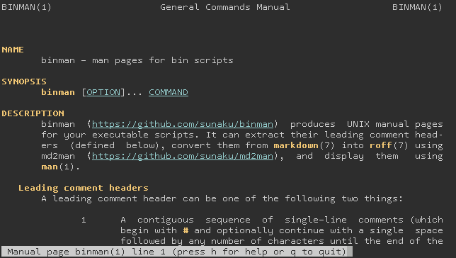

binman produces UNIX manual pages for executable scripts using md2man.
Supports any scripting language that has multi-line
comments or uses # for single-line comments: Ruby,
Perl, Python, Node.js, Tcl, AWK, UNIX shell, and more!
Provides a Ruby library and a command-line client too.
Individual extraction, conversion, and display commands.
Implemented in roughly 130 lines of pure Ruby code! :-)

Here is a complete example in Ruby to help you get started. For examples in other scripting languages, see the "Usage" section below!
If you only want to view pre-built manual pages:
gem install binman
If you also want to build your own manual pages:
gem install md2man -v '~> 3.0'
git clone git://github.com/sunaku/binman
cd binman
bundle install
bundle exec binman --help # run it directly
bundle exec rake --tasks # packaging tasks
See binman(1) manual:
binman --help
#!/usr/bin/env ruby
# your program's manual page goes here
require 'binman'
# OPTION 1: show manual and exit if ARGV has -h or --help except after --
BinMan.help
# OPTION 2: show manual unconditionally
BinMan.show
You can also specify your program's source file encoding above the manual:
#!/usr/bin/env ruby
# -*- coding: utf-8 -*-
# your program's manual page goes here
You can also write the manual as a multi-line Ruby comment:
#!/usr/bin/env ruby
=begin
your program's manual page goes here
=end
You can also specify your program's source file encoding above the manual:
#!/usr/bin/env ruby
# -*- coding: utf-8 -*-
=begin
your program's manual page goes here
=end
See the API documentation for even more possibilities!
#!/usr/bin/sh
# your program's manual page goes here
# OPTION 1: show manual and exit if ARGV has -h or --help except after --
binman help "$0" "$@" && exit
# OPTION 2: show manual unconditionally
binman show "$0"
#!/usr/bin/env perl
# your program's manual page goes here
# OPTION 1: show manual and exit if ARGV has -h or --help except after --
system('binman', 'help', __FILE__, @ARGV) == 0 and exit;
# OPTION 2: show manual unconditionally
system('binman', 'show', __FILE__);
You can also write the manual as a multi-line Ruby comment after __END__:
#!/usr/bin/env perl
print "your program's code goes here";
__END__
=begin
your program's manual page goes here
=end
#!/usr/bin/env python
# your program's manual page goes here
import sys, subprocess
# OPTION 1: show manual and exit if ARGV has -h or --help except after --
subprocess.call(['binman', 'help', __file__] + sys.argv) == 0 and sys.exit()
# OPTION 2: show manual unconditionally
subprocess.call(['binman', 'show', __file__])
You can also specify your program's source file encoding above the manual:
#!/usr/bin/env python
# -*- coding: utf-8 -*-
# your program's manual page goes here
You can also write the manual as a multi-line Ruby comment inside a docstring:
#!/usr/bin/env python
"""
=begin
your program's manual page goes here
=end
"""
You can also specify your program's source file encoding above the manual:
#!/usr/bin/env python
# -*- coding: utf-8 -*-
"""
=begin
your program's manual page goes here
=end
"""
The technique for determining current AWK script file name comes from here.
#!/usr/bin/awk -f
# your program's manual page goes here
# OPTION 1: show manual and exit if ARGV has -h or --help except after --
BEGIN {getline c <"/proc/self/cmdline"; sub(".*-f\0"," ",c); gsub("\0"," ",c);
if(system("binman help" c) == 0){ exit }}
# OPTION 2: show manual unconditionally
BEGIN {getline c <"/proc/self/cmdline"; sub(".*-f\0"," ",c); sub("\0.*","",c);
system("binman show" c)}
#!/usr/bin/env tclsh
# your program's manual page goes here
# OPTION 1: show manual and exit if ARGV has -h or --help except after --
if {![catch {exec -- >/dev/tty binman help $argv0 {*}$argv}]} {exit}
# OPTION 2: show manual unconditionally
exec >/dev/tty binman show $argv0
You can also write the manual as a multi-line Ruby comment inside an if 0:
#!/usr/bin/env tclsh
if 0 {
=begin
your program's manual page goes here
=end
}
/*
=begin
your program's manual page goes here
=end
*/
var exec = require('child_process').exec;
// OPTION 1: show manual and exit if ARGV has -h or --help except after --
exec(['>/dev/tty', 'binman', 'help', __filename].concat(process.argv).
join(' '), function(error){ if (error === null){ process.exit(); } });
// OPTION 2: show manual unconditionally
exec(['>/dev/tty', 'binman', 'show', __filename].join(' '));
See binman-rake(1) manual:
binman-rake --help
Add this snippet to your gemspec file:
s.files += Dir['man/man?/*.?'] # UNIX man pages
s.files += Dir['man/**/*.{html,css,js}'] # HTML man pages
s.add_development_dependency 'md2man', '~> 3.0'
Add the following line to your Rakefile:
require 'binman/rakefile'
You now have a rake binman task that pre-builds UNIX manual page files for
your bin/ scripts into a man/ directory so that your end-users do not need
md2man installed in order to view the manual pages you've embedded therein!
There are also sub-tasks to build manual pages individually as roff or HTML.
If you're using Bundler, this task also hooks into its gem packaging tasks and ensures that your UNIX manual pages are pre-built and packaged into your gem:
bundle exec rake build
gem spec pkg/*.gem | fgrep man/man
Released under the ISC license. See the LICENSE file for details.